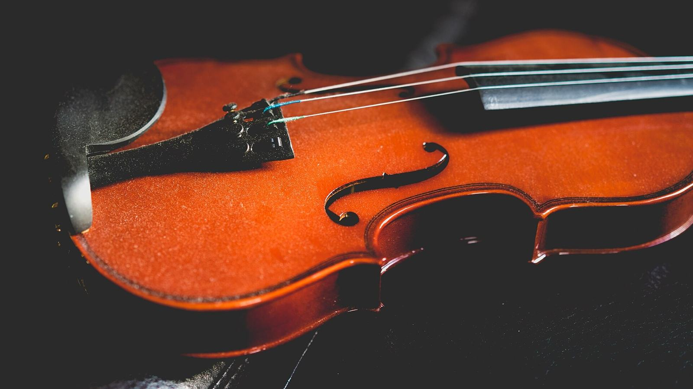
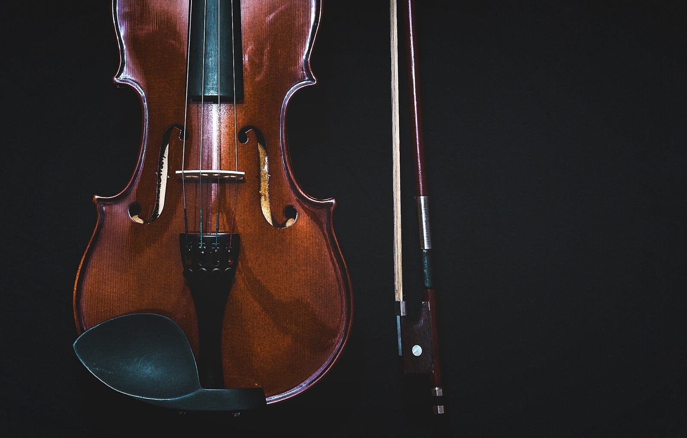
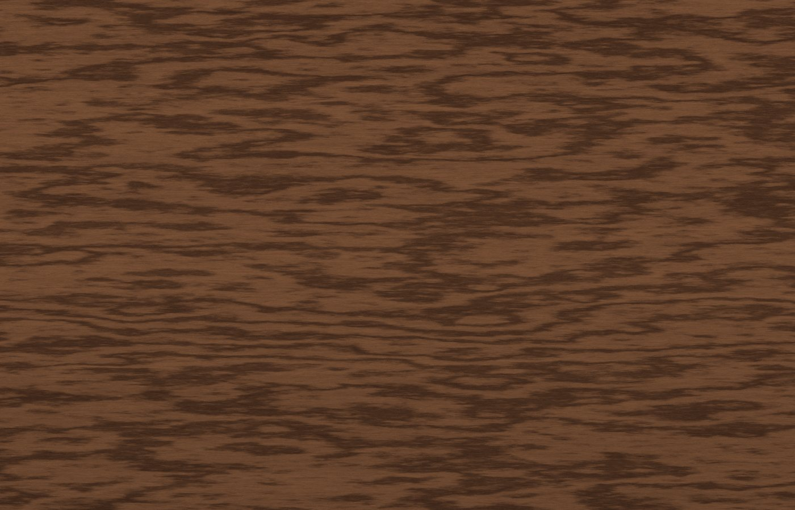

L'instrument
Ce qui fait un bon violon, pourquoi on le choisit, et la façon dont l'atelier pense le timbre, le confort et le jeu.
Lire la fiche →{{SITE}} fabrique des violons qui gardent l'essentiel : la ligne, l'équilibre, le confort, la fiabilité, et un son pensé comme celui d'un instrument entier, pas d'une liste de pièces.

Le savoir-faire de l'atelier, le dessin précis et un réglage soigné donnent un violon à la silhouette nette et à la voix sûre. Le but n'est pas d'imiter la série, mais de mettre la précision au service d'un instrument qui a une personnalité.

Ce qui fait un bon violon, pourquoi on le choisit, et la façon dont l'atelier pense le timbre, le confort et le jeu.
Lire la fiche →
Du bloc de bois à l'instrument réglé : les étapes, les outils, et le temps qu'il faut pour chacune.
Lire l'article →
Choisir son premier instrument est plus simple quand on sait quoi regarder : le confort, la stabilité, un son qui pardonne.
Le guide du débutant →

L'atelier choisit autant que possible des bois de la région. Le but n'est pas la rareté pour elle-même, mais la cohérence : une bonne matière, choisie avec soin, préparée sur place et employée avec intention.
Que vous compariez un violon fait main à un modèle d'usine ou que vous cherchiez un instrument plus personnel, tout passe par un échange direct avec l'artisan et des options choisies ensemble.
Pourquoi le fait main compte →Un bon violon sert sur scène, mais aussi pour travailler, composer, et jouer en silencieux avec un casque.
Découvrir l'instrument →